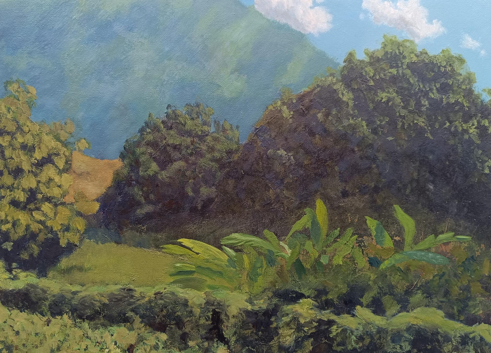
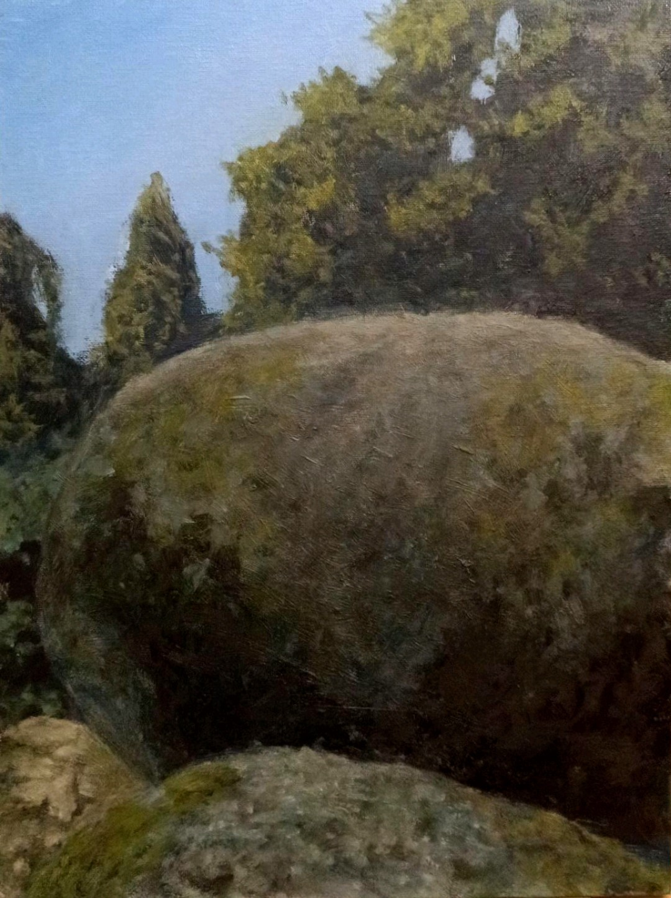
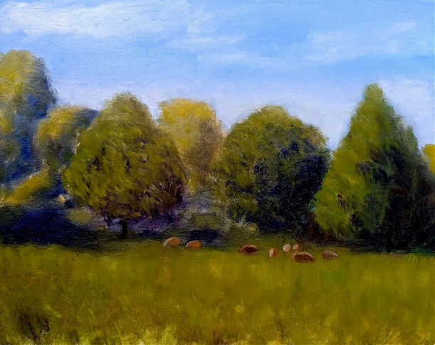
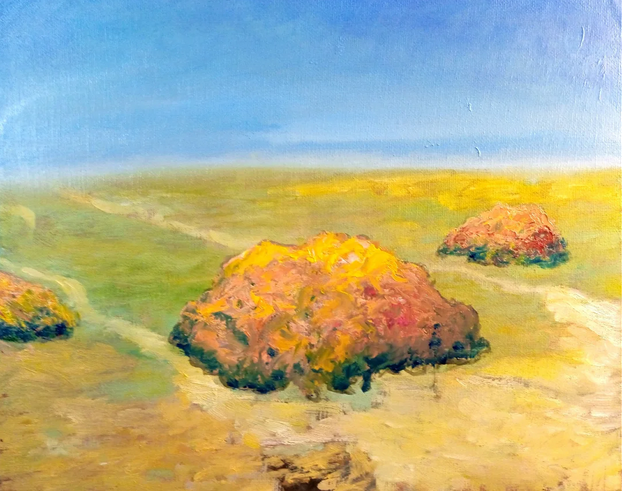
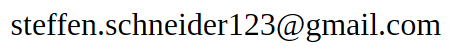

Seit 2018 male ich autodidaktisch mit Ölfarben, seit 2024 mit hoher Intensität. Die Malerei ist für mich der zentrale Ort von Freiheit, Präsenz und Erkenntnis.
Meine Arbeiten bewegen sich zwischen Semiabstraktion und Impressionismus. Ausgangspunkt sind Naturformen: Bäume, Moose, Wasser, Landschaften. Sie entstehen aus der Fantasie, vom Foto abgemalt oder plein-air.
Ich bewege mich immer weiter weg vom realistisch gemalten, kontrollierten Bild. Es braucht mutige Pinselstriche, "Fehler", Zufälle. Ein Bild, das sich von selbst malt. Die Intuition kennt den Weg. Durch das Nicht-Perfekte bleibt Raum für die Fantasie des Betrachters, der das Bild in Gedanken zu Ende malt.
So möchte ich die außerordentliche Schönheit der Natur sichtbar machen.




Instagram: @steffenschneider123
E-Mail:
